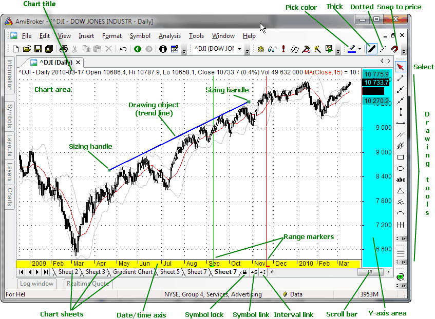

This window shows the chart of different technical indicators.
At the bottom of the chart, you can see the X-axis. Depending on the Parameter window setting, it may or may not display dates. Below it, you can see the scroll bar and the chart sheets tab control. The scroll bar can be used to display past quotes, while the sheet tab allows you to view different chart pages/sheets (click here to learn more about chart sheets).
To the right, you can see the Y-axis area (marked in blue color) that shows the Y-scale and value labels. Value labels are colored fields that precisely display the "last value" of plots. "Last value" is the value of the indicator (or price) for the last currently displayed (rightmost) bar. The Y-axis area is also used to move/size the chart vertically.
Chart parameters and settings can be adjusted by clicking with the RIGHT MOUSE button over the chart and choosing the Parameters option from the chart context menu.
The chart can also be scrolled, resized, moved, and shrunk. To learn more about it, please read Tutorial: Basic Charting Guide.